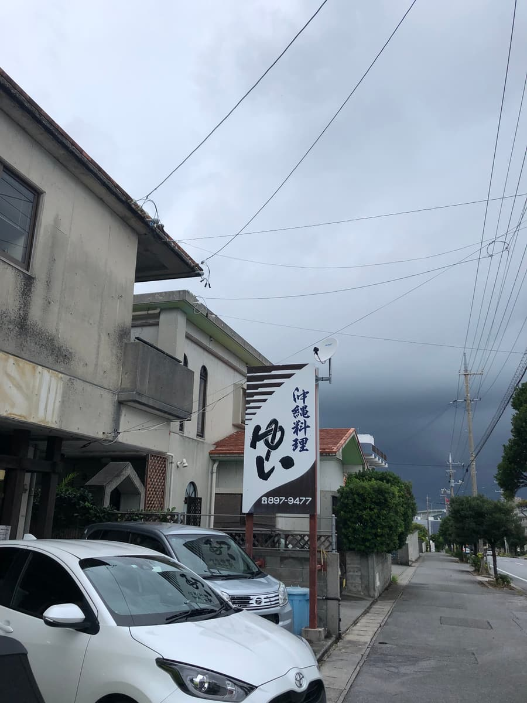
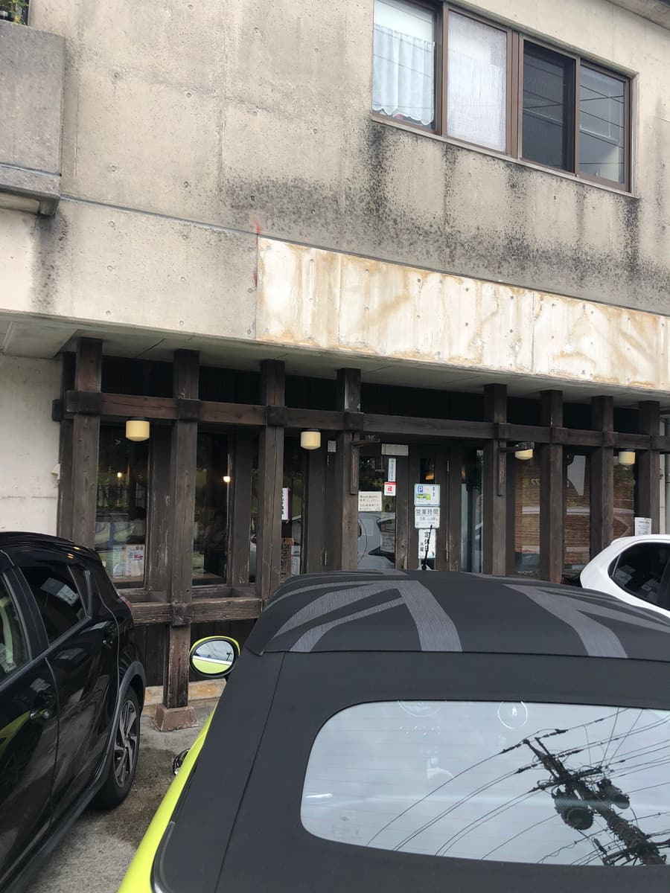
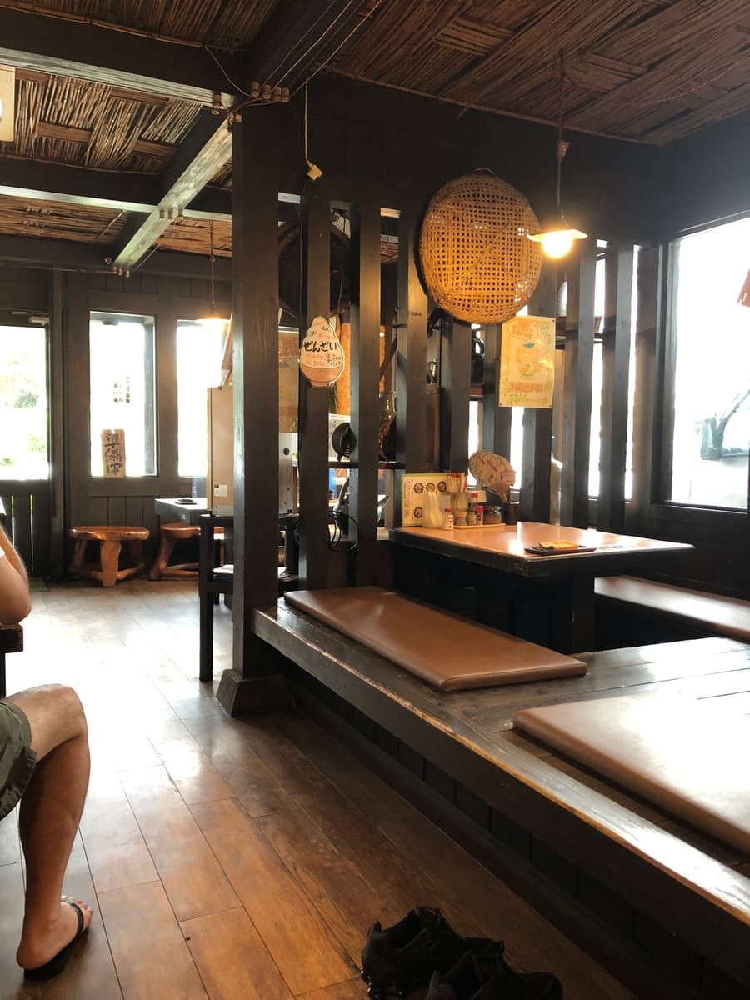
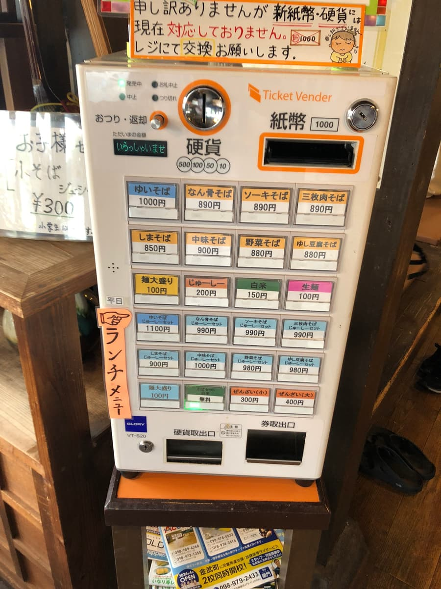
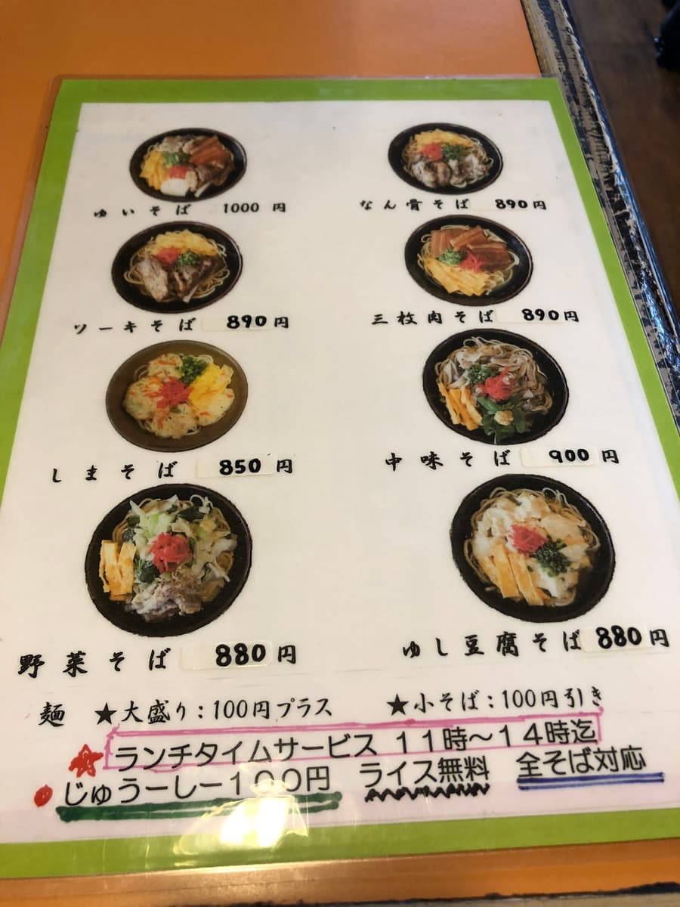
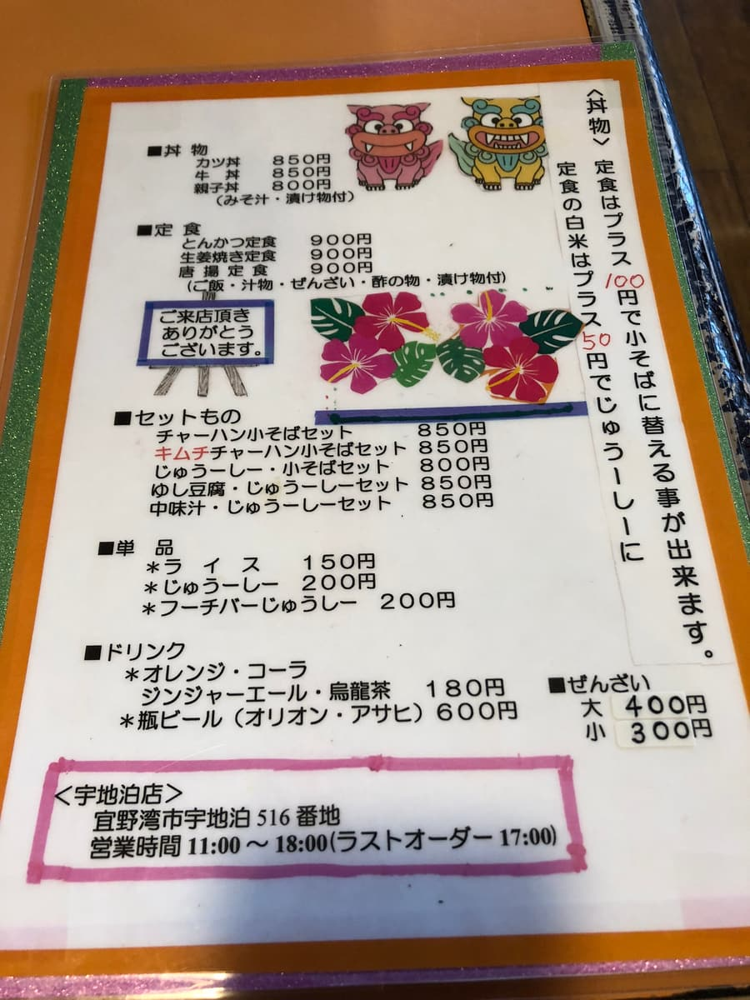
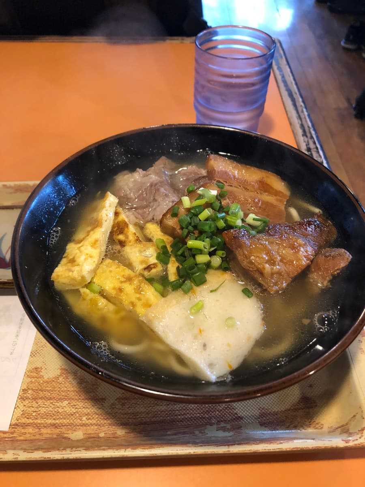
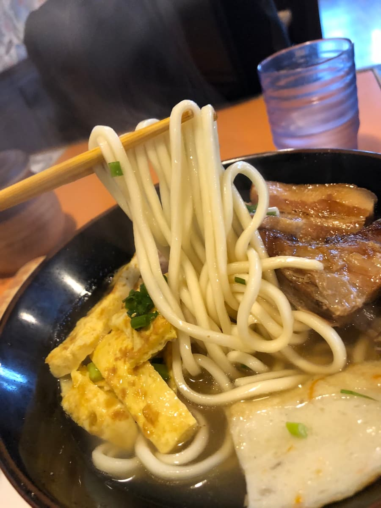

*This article was created with the AI Claude 3.5 Sonnet, with some additions of my own.
I ate here in September 2024😄 This time I'd like to introduce "Okinawa Soba Yui" in Uchidomari, Ginowan City.


This shop is in a quiet spot one street in from Route 58. The "Okinawan cuisine" sign at the entrance serves as a landmark. Inside, it has a calm, modern Japanese atmosphere, with an impressive interior based on wood grain. The bamboo on the ceiling and the lighting are atmospheric and lovely too😊




The menu centers on Okinawa soba, with a wide selection including yushi-dofu (soft Okinawan tofu) soba. This time I decided to order the "Yui Soba" (¥1,000), which bears the shop's name.

After waiting a while, the Yui soba arrives along with the fragrant aroma of broth🍜 First, the soup. It's a well-balanced blended broth of bonito and pork bone, with the pork bone flavor coming through slightly more.

Next, the noodles. They're medium-thick straight noodles, boiled on the soft side😌
The toppings are plentiful: braised pork belly (sanmai-niku), soft-bone pork ribs (nankotsu soki) and bone-in pork ribs (hon-soki). All are simmered tender, but it bothered me that some slightly sinewy parts remained. The chopped green onion topping adds an accent and nice color too.
Local customers and tourists were visiting, and the shop seemed lively. Apparently jushi is cheaper at lunchtime, so it's a good deal too😄
Rating (9/15): My impression is of a perfectly tasty Okinawa soba. The calm interior has a nice atmosphere where you can enjoy your meal at a leisurely pace. When you're in Ginowan City, why not stop by once?😊
Noodles: ★★★☆☆（3）
Soup: ★★★☆☆（3）
Toppings: ★★★☆☆（3）